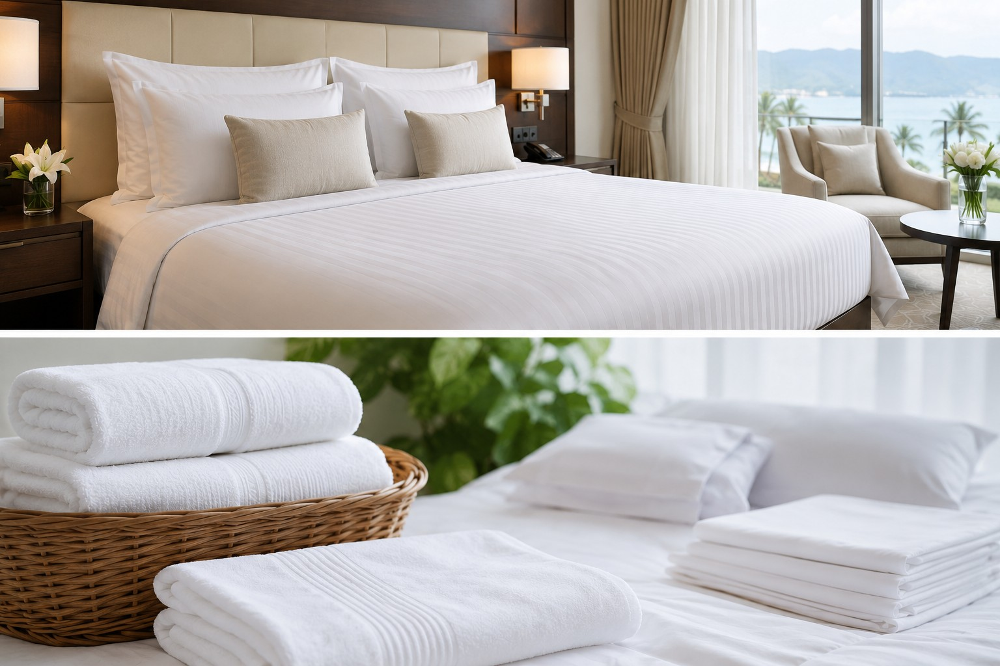
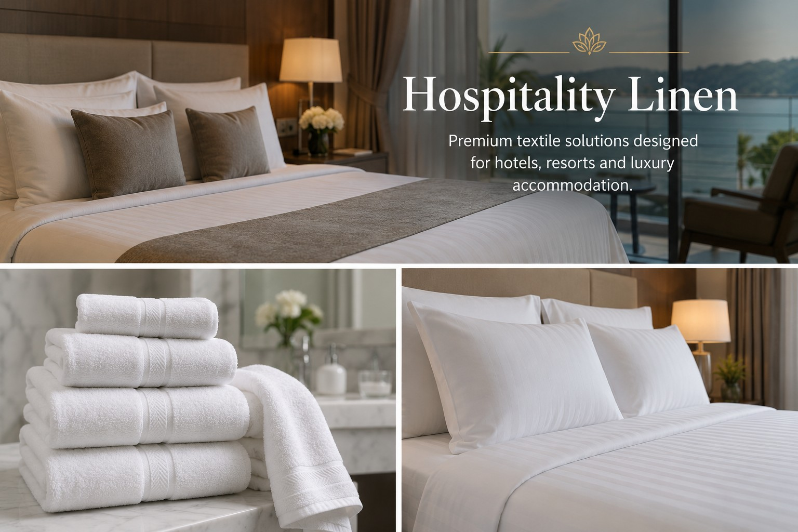
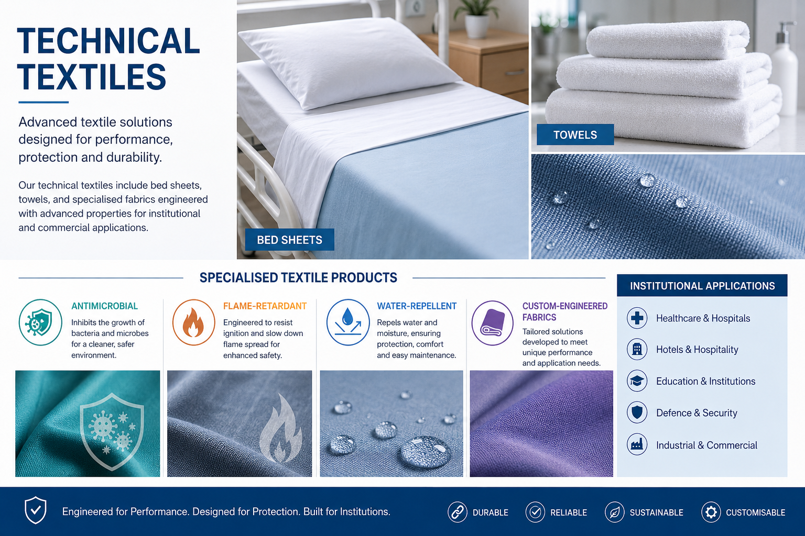
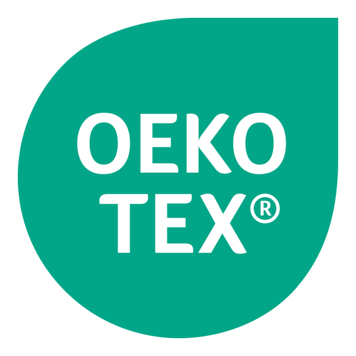
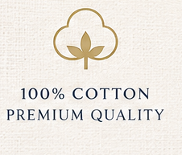
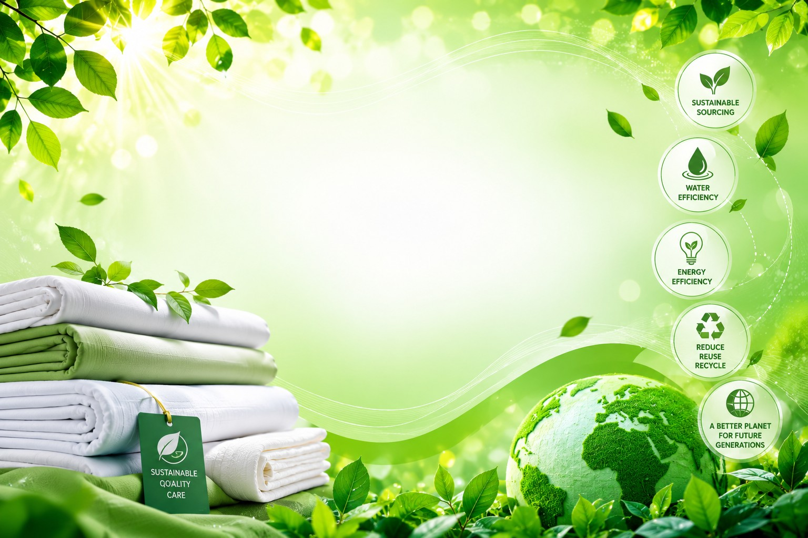

White Heaven Linen™ is an Ireland-based supplier of premium textile solutions, built on a foundation of quality, innovation and sustainability. Through trusted global manufacturing partnerships and extensive textile expertise, we create products that deliver exceptional craftsmanship, lasting durability and outstanding performance. Every stage of our process—from product development and quality assurance to responsible sourcing—is guided by a commitment to excellence, ensuring our customers receive reliable textile solutions that meet the highest international standards.

High-performance hospital bedding, patient gowns, medical uniforms, hospital curtains and healthcare textile systems designed for demanding clinical environments.
Learn More
Luxury hotel bedding, premium towels, bathrobes, restaurant linen and customised textile collections for hotels and resorts.
Learn More
Specialised textile products including antimicrobial, flame-retardant, water-repellent and custom-engineered fabrics developed for institutional applications.
View ProductsQuality is at the heart of everything we do. Every textile solution is developed with meticulous attention to detail, combining superior materials, expert craftsmanship and rigorous quality assurance to ensure outstanding performance, durability and comfort.
Driven by extensive textile knowledge and a passion for innovation, we continually explore advanced materials, modern manufacturing techniques and intelligent product development to deliver solutions that meet the evolving needs of global markets.
We are committed to responsible sourcing, environmentally conscious manufacturing and sustainable business practices, creating textile solutions that deliver long-term value while contributing to a more sustainable future.
Through trusted international manufacturing partnerships, we combine technical expertise with world-class production capabilities to ensure consistent quality, dependable supply and exceptional value across every product collection.
We believe lasting success is built on trust, transparency and collaboration. By understanding each customer's unique requirements, we deliver tailored textile solutions and build long-term relationships based on reliability and shared growth.
We believe in building long-term relationships by understanding each customer's operational needs and providing tailored textile solutions.
Years of Combined Textile Expertise
Premium Textile Products
Product Categories
Primary Business Market
Hospitals, healthcare groups, nursing homes, private clinics and medical distributors.
Hotels, resorts, serviced apartments, wellness centres and luxury accommodation providers.
Industrial laundry operators requiring durable, high-performance textile systems.
Universities, public sector organisations, correctional facilities and institutional buyers.
To supply innovative, durable and sustainable textile solutions that help healthcare and hospitality organisations improve operational efficiency while delivering exceptional comfort and quality.
To become one of Europe's trusted textile solution providers, recognised for quality, sustainability, customer service and continuous innovation.
Sustainability is at the heart of White Heaven Linen™'s business philosophy. We work with manufacturing partners who continuously improve environmental performance through responsible sourcing, efficient production processes, reduced waste and durable textile solutions that support a circular economy. Our goal is to help healthcare and hospitality organisations achieve their sustainability objectives without compromising quality, performance or value.
Carefully selected manufacturing partners with responsible business practices and transparent supply chains.
Long-life textile products designed to reduce waste and lower lifecycle costs.
Supporting resource-efficient manufacturing and environmentally conscious textile finishing technologies.
Regularly reviewing product development to improve sustainability, quality and customer value.
Our products are developed to comply with internationally recognised quality, environmental and safety standards required by healthcare, hospitality and institutional customers.

Products tested for harmful substances to ensure safety and confidence.
Supporting responsible chemical management throughout production.

Manufacturing partners operate structured quality management systems.

Committed to continuous improvement in environmental and social responsibility.
Whether you require premium healthcare textiles, luxury hospitality linen, institutional products or customised textile solutions, White Heaven Linen™ is ready to support your business.